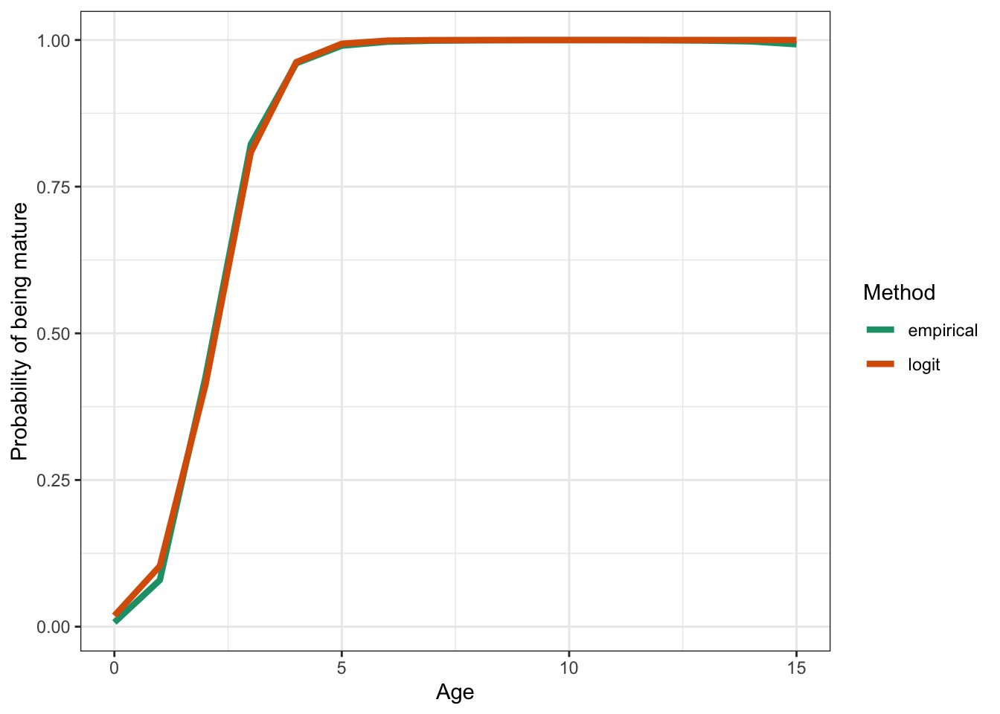

# Names of required packagespackages <-c("dplyr", "tidyr", "ggplot2", "TMB", "reshape2", "here", "remotes", "lubridate")# Install packages not yet installedinstalled_packages <- packages %in%rownames(installed.packages())if (any(installed_packages ==FALSE)) {install.packages(packages[!installed_packages], repos ="http://cran.us.r-project.org")}# Install FIMS: main branch version if on main, dev version on any other branchbranch_name <-system("git branch --show-current")use_fims_main <-grepl("main", branch_name)if (use_fims_main) { remotes::install_github("NOAA-FIMS/FIMS")} else { remotes::install_github("NOAA-FIMS/FIMS", ref ="dev")}remotes::install_github("r4ss/r4ss")# Load packagesinvisible(lapply(packages, library, character.only =TRUE))library(FIMS)R_version <- version$version.stringTMB_version <-packageDescription("TMB")$VersionFIMS_commit <-substr(packageDescription("FIMS")$GithubSHA1, 1, 7)source(file.path("R", "utils.R"))
Code
theme_set(theme_bw())
R version: R version 4.4.2 (2024-10-31)
TMB version: 1.9.16
FIMS commit: 92746fe
Stock name: Pacific Hake
Region: Joint Technical Committee
Analyst: Kelli F. Johnson
Simplifications to the original assessment
Weight-at-age data
Weight-at-age data was taken from the .ss_new file because this file contains data for all years in the model rather than just since 1975 based on the rules supplied in the input file to the Stock Synthesis model. No simplifications were made for this assessment regarding weight-at-age data because all matrices in the Stock Synthesis model are replicates of each other, e.g., weight at age for fleet two is the same as beginning and middle of the year weight at age in this model.
Maturity
Year-specific maturity ogives for Pacific Hake were translated to a single logistic curve. First, estimates of maturity at age for the maximum day of the year investigated were averaged across years. Subsequently, this ogive was plotted and several values for the inflection point and slope parameters of the logistic curve were used to find a logistic curve that matched the average curve as best as possible. This lead to a curve with an inflection of 2.2 and a slope of 1.8.
Code
maturity_data |> dplyr::filter(doy ==max(doy)) |> dplyr::group_by(age) |> dplyr::summarize(empirical =mean(p_mature)) |> dplyr::full_join(execute_logistic(# TODO: un-hard code these age values ages, hake_maturity_slope, hake_maturity_inflection_point ) |> dplyr::rename(age = x, logit = value),by ="age" ) |> tidyr::pivot_longer(cols =c("empirical", "logit")) |> ggplot2::ggplot(ggplot2::aes(age, value, color = name)) + ggplot2::geom_line(linewidth =1.5) + ggplot2::xlab("Age") + ggplot2::ylab("Probability of being mature") + ggplot2::scale_color_brewer(palette ="Dark2", name ="Method")

Selectivity
The logistic and double logistic selectivity curves are currently the only selectivity forms that are available in FIMS. A researcher from the Southwest Fisheries Science Center is working on adding age-specific selectivity, which will be available later this calendar year.
Age-1 index
The relative age-1 index was removed from the data because FIMS currently works on biomass and does not allow for inputs in numbers. This relative index could be included after an agreed upon method to translate numbers of age-1 fish to biomass is established. This could be as simple as multiplying annual numbers of fish by weight of age-1 fish from the weight-at-age estimates from the GLMM.
Data
All data for a FIMS model is contained in one data frame. Here, we call this object fims_data. The creation of this data set is assisted by the R function called get_ss3_data() written by Drs. Ian G. Taylor and Megumi C. Oshima.
Because data-weighting is not available in FIMS, the input sample size for the survey age-composition data was multiplied by 10. Additionally, because non-parametric selectivity is not yet available in FIMS, the terminal year of data was removed from this data set.
Code
inputs <- r4ss::SS_read(base_dir)inputs[["wtatage"]] <- r4ss::SS_readwtatage(file.path(base_dir, "wtatage.ss_new"))fims_data <-get_ss3_data(ss3_inputs = inputs,fleets =seq(inputs[["dat"]][["Nfleets"]]),ages = inputs[["dat"]][["agebin_vector"]]) |> dplyr::filter( datestart <=as.Date(paste0(inputs[["dat"]][["endyr"]], "-01-01")), value !=-999,# TODO: allow fleet3 after I figure out how to go from numbers to mt name !="fleet3" ) |> dplyr::mutate(uncertainty =ifelse(test = type =="age"& name =="fleet2", uncertainty *10, uncertainty ) ) |> dplyr::filter( datestart !="2024-01-01" ) |> FIMS::FIMSFrame()n_ages_years <-get_n_ages(fims_data) *get_n_years(fims_data)
Code
# Printing the S4 class that is returned from FIMSFrame()fims_data
tbl_df of class 'FIMSFrame'
with the following 'types': age, landings, weight-at-age, index
# A tibble: 6 × 10
type name age length datestart dateend value unit uncertainty year
<chr> <chr> <dbl> <dbl> <date> <date> <dbl> <chr> <dbl> <dbl>
1 age fleet1 1 NA 1966-01-01 1966-12-31 -999 "" NA 1966
2 age fleet1 2 NA 1966-01-01 1966-12-31 -999 "" NA 1966
3 age fleet1 3 NA 1966-01-01 1966-12-31 -999 "" NA 1966
4 age fleet1 4 NA 1966-01-01 1966-12-31 -999 "" NA 1966
5 age fleet1 5 NA 1966-01-01 1966-12-31 -999 "" NA 1966
6 age fleet1 6 NA 1966-01-01 1966-12-31 -999 "" NA 1966
additional slots include the following:fleets:
[1] 1 2
n_years:
[1] 58
ages:
[1] 1 2 3 4 5 6 7 8 9 10 11 12 13 14 15
n_ages:
[1] 15
lengths:
numeric(0)
n_lengths:
[1] 0
start_year:
[1] 1966
end_year:
[1] 2023
Code
# Summary of the data types availableFIMS::get_data(fims_data) |> dplyr::filter(value !=-999) |> dplyr::group_by(type, name) |> dplyr::count()
# A tibble: 5 × 3
# Groups: type, name [5]
type name n
<chr> <chr> <int>
1 age fleet1 735
2 age fleet2 225
3 index fleet2 15
4 landings fleet1 58
5 weight-at-age fleet1 870
Model
Parameterization
Currently, only the multinomial distribution is available for fitting composition data in FIMS. Although, a double-logistic curve was explored for the fishery, results below are for the logistic. Survey selectivity was fixed with an inflection point at 2 years and a slope of 1.
Natural mortality can be estimated in FIMS using age- and year-specific values but all values were fixed at the median estimate from Stock Synthesis for this analysis.
# Run the model without optimization to help ensure a viable modeltest_fit <- default_parameters |>initialize_fims(data = fims_data) |>fit_fims(optimize =FALSE)fit <- default_parameters |>initialize_fims(data = fims_data) |>fit_fims(optimize =TRUE)
✔ Starting optimization ...
ℹ Restarting optimizer 3 times to improve gradient.
ℹ Maximum gradient went from 0.30984 to 0.06327 after 3 steps.
✔ Finished optimization
✔ Finished sdreport
ℹ FIMS model version: 0.3.0.1
ℹ Total run time was 3.57689 seconds
ℹ Number of parameters: total=134, fixed_effects=134, and random_effects=0
ℹ Maximum gradient= 0.06327
ℹ Negative log likelihood (NLL):
• Marginal NLL= 425250.50284
• Total NLL= 425250.50284
ℹ Terminal SB=